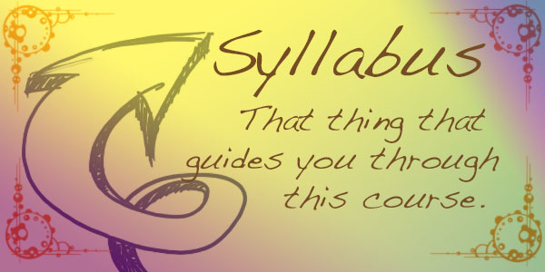

6.11.0.4
Syllabus

The course will cover the following topics, in roughly this order:
one language, many languages, a programming-language programming language
a model of Racket as an extensible programming language
the syntax extension mechanism; fluidly embedded languages
project ideas due
syntactic interposition points; modules
languages as modules; statically embedded languages
types and type checking
statically typed, statically embedded languages
equipping a language with "ugly" syntax
The rest of the course is dedicated to your "hack your own language"
Project.